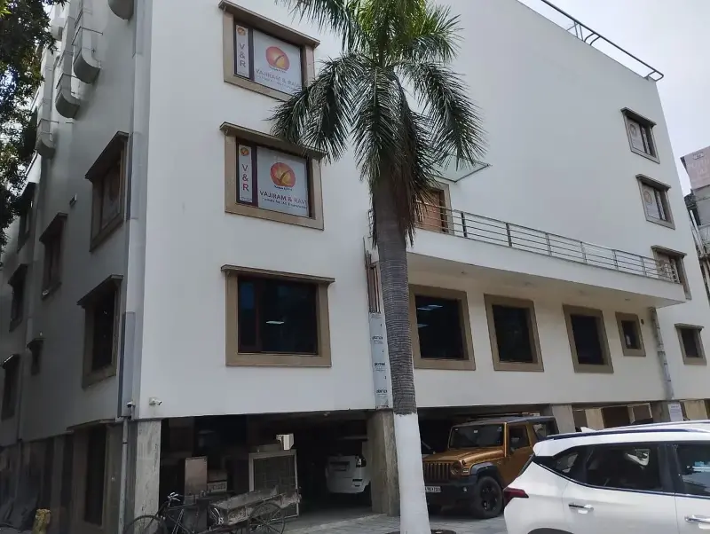

General Studies · Classroom
UPSC GS Course 2028
General Studies Prelims cum Mains Programme, by Vajiram & Ravi.
One programme for the Civil Services Examination 2028 that brings together classes, study material, revision, tests and mentorship, from the basics to the advanced level.
Prefer to study online? UPSC GS Online Course 2028- 2.5 hrsPer class, daily
- 300+Class lectures
- 900+Hours of teaching
- 18Yellow Books
- 30Prelims tests
50+ years of guiding UPSC aspirants
UPSC General Studies Prelims cum Mains Programme 2028
With more than five decades of experience preparing aspirants for the Civil Services Examination, Vajiram & Ravi understands that success in the UPSC CSE requires more than completing the syllabus. It requires conceptual clarity, structured learning, regular revision, continuous assessment and the ability to apply knowledge effectively in the examination.
The programme is a comprehensive preparation programme for aspirants targeting the UPSC Civil Services Examination 2028, integrating learning, revision, testing and mentorship throughout the preparation cycle.
The pedagogy takes aspirants from the basic to the advanced level, in line with the UPSC CSE syllabus. With a planned academic schedule and continuous academic support, it helps aspirants build a strong foundation and progressively develop the knowledge, analytical ability and examination skills required for Prelims and Mains.
Programme features
What the programme includes.
A complete learning ecosystem: daily classes, focused study material, current affairs, tests and mentoring.
Classes
- Classes of 2.5 hours, held every day of the week
- 300+ class lectures
- 900+ hours of teaching by experienced subject specialists
- Revision classes: every class lecture can also be watched online
Study material
- Around 18 Yellow Books: focused study material covering General Studies for Prelims and Mains, as per the UPSC syllabus
- The Recitals, the monthly current affairs magazine: hard copies from the office for classroom students, a PDF on the portal for online students
Tests and mentoring
- 30 Prelims tests covering General Studies and Current Affairs
- Mentoring sessions during the course, to clear doubts and guide your preparation

Free with the programme
6 more months of Mains support, free.
The programme also gives you an additional support framework: the Mains Support Programme (MSP).
-
01Until Mains 2028
- Online current affairs classes
- MSP classes to revise the syllabus
- MSP Test Series, June to November 2028:
- 12 sectional tests (10 questions)
- 4 full-length tests (20 questions)
- Evaluation and feedback
- Model answer explanation videos for the sectional tests
- Mentor support
-
02Until Prelims 2029
- Current affairs content support
- Student portal access: classes, objective and subjective tests, supplementary study material, daily current affairs, articles, class schedules and announcements
-
03As you clear each stage
Clear Prelims4 full-length Mains tests with mentorship support
Clear MainsA free Interview Guidance Programme
Why this programme
Why choose the General Studies Programme for UPSC 2028?
The UPSC CSE demands preparation that is consistent, integrated and aligned with the evolving requirements of the examination. Aspirants often struggle not for lack of effort, but because their preparation lacks structure, revision, assessment or a clear connection between the stages of the examination.
The course brings classroom learning, focused study material, current affairs, revision, testing and mentorship together in one structured framework.
Integrated Prelims & Mains preparation
Prepare for both stages of the examination together, rather than treating Prelims and Mains as two separate phases.
Comprehensive syllabus coverage
Follow a structured academic schedule built around the UPSC CSE syllabus, covering the General Studies subjects systematically.
From the foundation to advanced understanding
Develop clarity from the fundamentals and progressively move towards the analytical, application-oriented understanding UPSC requires.
Continuous revision & reinforcement
Regular revision support helps you revisit important concepts and strengthen retention throughout the preparation cycle.
Regular assessment
Testing lets you assess your preparation, identify gaps and make timely improvements in approach and performance.
Current affairs integration
Stay connected with relevant developments through dedicated current affairs support, and integrate them with static General Studies preparation.
Mentorship & academic guidance
Get guidance during the course to address doubts, refine your preparation and keep your direction through the UPSC journey.
Is it for you?
Who should join
- Aspirants in the third year of their graduation, or who have already graduated
- Aspirants pursuing or having completed a postgraduate programme
- Candidates planning to appear for the UPSC Civil Services Examination 2028
- Aspirants looking to build a strong, comprehensive foundation for Prelims and Mains
- Candidates who want a structured approach to General Studies, with regular revision and assessment
- Aspirants who want continuous academic guidance and mentorship through their preparation
How the programme helps you
- Build a strong foundation
- Develop a clear understanding of fundamental concepts before progressing to advanced topics and examination-oriented application.
- Complete the syllabus systematically
- A structured academic schedule covers the extensive General Studies syllabus in a planned manner, leaving room for revision and assessment.
- Learn from experienced subject specialists
- Faculty who understand the requirements of the Civil Services Examination make concepts accessible and application-oriented.
- Study with focused material
- Study material designed around the UPSC CSE syllabus helps you streamline your sources and organise your preparation.
- Strengthen Prelims & Mains readiness
- Classes, current affairs, revision, objective and subjective tests and mentorship prepare you for the different demands of the examination.
- Stay consistent with a structured routine
- A regular academic schedule gives you a defined routine, helping you keep continuity and focus through the demanding preparation cycle.

Why Vajiram & Ravi?
The Vajiram & Ravi advantage
For decades, Vajiram & Ravi has been a part of the UPSC preparation journeys of aspirants across the country. The UPSC GS Course 2028 brings together the institute’s classroom teaching experience, structured study resources, current affairs support, assessment framework and mentoring ecosystem under one programme.
The objective is to give aspirants a clear academic direction from the beginning of their UPSC preparation through to revision, assessment and examination readiness.
Admission
How to join the classroom programme.
- Complete the admission form
- Upload a clear passport-size photo
- Upload your ID proof
- Upload the PAN cardof the aspirant or a parent
- Pay the fee onlineKindly check the online transaction limit with your bank
Talk to us
Still unsure about the course? Talk to a counsellor.
Get a free counselling session from our experts: tell us where you are in your preparation, and we will call you back.
Frequently asked questions
Still unsure? A counsellor can help, with no pressure to enrol.
What is the UPSC GS Course by Vajiram & Ravi?
It is a General Studies Prelims-cum-Mains Classroom Programme designed to prepare aspirants for all three stages of the Civil Services Examination: Prelims, Mains and Interview, through structured classroom teaching, study material, tests and mentorship.
Which is the best UPSC GS course?
The UPSC GS Course by Vajiram & Ravi is built for aspirants targeting the UPSC exam. The programme covers the complete General Studies syllabus with expert faculty, study material, test series, mentorship and interview guidance.
What is the duration of the UPSC GS Course?
The course runs for approximately 11 months, ensuring timely completion of the syllabus along with multiple revisions before the examination.
Is it the right time to join a UPSC course?
Yes. Joining early gives aspirants sufficient time to complete the syllabus, revise multiple times, practise answer writing, and prepare for both Prelims and Mains before the examination.
Does the course cover both Prelims and Mains?
Yes. The programme is specifically designed to prepare candidates for both the Prelims and Mains stages through integrated classroom teaching, revision sessions and test series.
What is the fee for the UPSC GS Course?
The course fee is ₹1,80,000 (including GST) for the General Studies Programme, while the GS + CSAT package costs ₹1,95,000 (including GST).
What study materials are provided?
Students receive 18 Yellow Books, the monthly current affairs magazine (The Recitals), online class recordings, daily current affairs, supplementary study material, and access to the student portal.
Does the course include test series for Prelims and Mains?
Yes. The programme includes 30 Prelims tests, and the Mains Support Programme (MSP) with sectional and full-length tests, answer evaluation, model answers, explanation videos and mentorship support.
Does the course provide answer writing practice?
Yes. The programme includes Mains answer writing practice through sectional tests, full-length tests, model answers, evaluation and mentor feedback.
How can I enrol in the UPSC GS Course?
Complete the admission process by filling out the application form, uploading the required documents, and paying the course fee through the available payment methods.
Contact us
Pick the channel that suits you, or visit us in New Delhi.
New Delhi centre
1-B/7, Pusa Road, Old Rajinder Nagar, New Delhi 110060
Next to Gate 5 of Karol Bagh Metro Station,near pillar 103
Mon – Sat, 9 am – 7 pm

Ready to start your UPSC preparation?
The next batch starts on 27 November 2026. Join the UPSC GS Course 2028, or talk to a counsellor first.